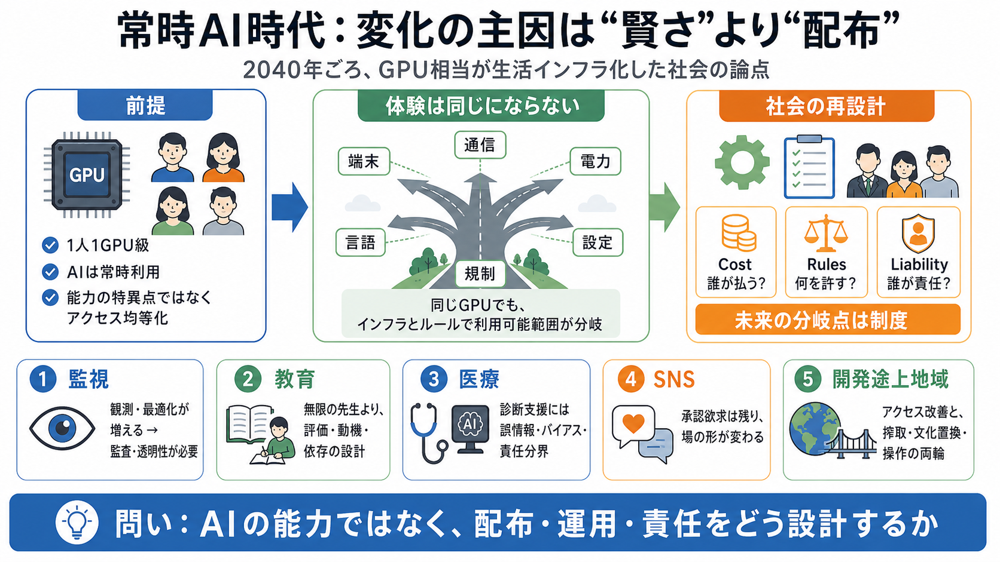

Trends in Artificial Intelligence
1,100,000H100e The largest known AI data center has a computing capacity equivalent to 1.1 million NVIDIA H100 chips. …

「2040年ごろに世界で“1人1枚級”のGPU相当が行き渡る」世界を前提に、監視・教育・SNS・医療・開発途上地域がどう変わるかを問います。 （技術は特異点ほど跳躍せず、“より速く・安く”に進むだけ）
フロンティア級LLMが誰でも“生活インフラ”のように常時使えるだけで、人間の意思決定や制度運用の前提が変わります。 変化は「能力の飛躍」ではなく「利用の普遍化」から始まる。
重要なのは、AIが人を超えることより「いつでも使える」ことで、教育・監視・医療の“日常の手順”が置き換わります。 常時利用は、便利さだけでなく依存・監査・責任の設計を要求する。
GPU相当が行き渡っても、通信帯域・端末性能・電力・言語入力・プロバイダ設定（更新頻度、安全フィルタ、課金）で体験は分岐します。 さらに規制・検閲・データ権利で「利用可能範囲」が揺れる。
常時AIが広がると、社会側がAIを介して人々を観測・最適化する方向に動きうる一方で、教育や医療では運用と倫理が成否を左右します。 （開発途上地域では利益と損失の両方が論点化）
常時AIの普及で、個人の相談が増えるほど、社会や企業がAIを使って行動を観測・最適化する動きが強まり得ます。 恐れるだけでなく、安全設計（監査・透明性）がないと結末が固定される。
教育では「無限に忍耐強い先生」より、学習目標・評価・依存・誤情報対策・最終責任が重要です。 医療でも、診断支援が進むほど誤診・バイアス・データ欠損・緊急時判断の責任分界が課題になる。
AIが発信を補助しても、人は発信・承認・コミュニティ・物語を求めるため、SNSが消滅するとは限りません。 代わりに、新しい形のSNSや別の場が生まれる可能性が高い。
普及が全世界に及んでも、既存インフラ差と制度設計の差で効果は偏り得ます。 その一方で、教育アクセス改善の期待だけでなく、情報搾取・言語/文化の置換・政治的操作といった損失の可能性も同時に描く必要がある。
本シナリオはGPU供給の仮定が中心ですが、現実の未来を組み立てるには、誰がコストを負担し、誰がルールを決め、誰が誤りの責任を負うかがセットで要ります。 （電力・通信・端末・価格・規制・データ責任分界が未提示）
1,100,000H100e The largest known AI data center has a computing capacity equivalent to 1.1 million NVIDIA H100 chips. …
Top enterprise limitations: Production inference requires approximately 200 GB VRAM at INT4 quantization (2-4 H100 GPUs,…
| Self-hosted (cloud GPU) | $8–16/hour per GPU | H100-class hardware required | [...] models, including Opus 4.8 and Son…
OpenAI’s biggest benchmark claim concerns long-running agentic performance, with one benchmark showing all three models …
Quick verification Confirm you're human to keep going. The AI arena is free today LLM Stats LLM Stats Logo # AI Tren…